Agency
Is Agency
Создание цифровых впечатлений
WEB
Исследование
Исследование: анализ ниши, анализ конкурентов,
анализ лучших украинских и мировых практик, анализ
целевой аудитории. На основе полученных сведений
подбирается необходимый продукт формируется
дизайн-концепция, составляется бриф и техническое задание.
UX-процесс: на этом этапе формируется карта сайта
(разделы и подразделы сайта) а так же создаются
прототипы, благодаря которым можно проверить
работоспособность структуры еще до создания дизайна.
Также на данном этапе мы адаптируем структуру сайта
под контент.
UX
UI
UI-процесс: после утверждения прототипов мы приступаем
к созданию дизайна на основе стиля выбранного в процессе
исследования. На данном этапе подбираются все
иллюстративные материалы и создаются макеты будущего
сайта.
Верстка и посадка сайта на CMS систему: после утверждения
дизайна макет передается на верстку. На этом этапе создается
версия сайта для компьютера, планшета и телефонов разных
размеров.
Верстка

Продвижение
Продвижение: на стадии разработки сайта необходимо
продумать комплекс мер, позволяющих в будущем продвигат
проект. Только при таком подходе он окажется в топе,
соответственно, привлекая максимум целевой аудитории.
Составными элементами комплекса мер по внутренней
оптимизации ресурса являются:
- Установка счетчиков статистики;
- Формирование семантического ядра;
- Выбор головного хоста;
- Создание robots.txt и sitemap.xml;
- Заполнение разделов контентом, соответствующим критериям уникальности.
SITE

Мы создаём не просто сайты:
Наши сайты это не только разработка, дизайн и продвижение.
Это решение маркетинговых и бизнес-задач: финансовых и
нефинансовых. Вы покупаете не просто человеко-часы, вы
покупаете наш опыт, экспертизу и навык создания лучших сайтов
в нише.
Проекты

Inmaster
Inmaster
Inmaster
Inmaster